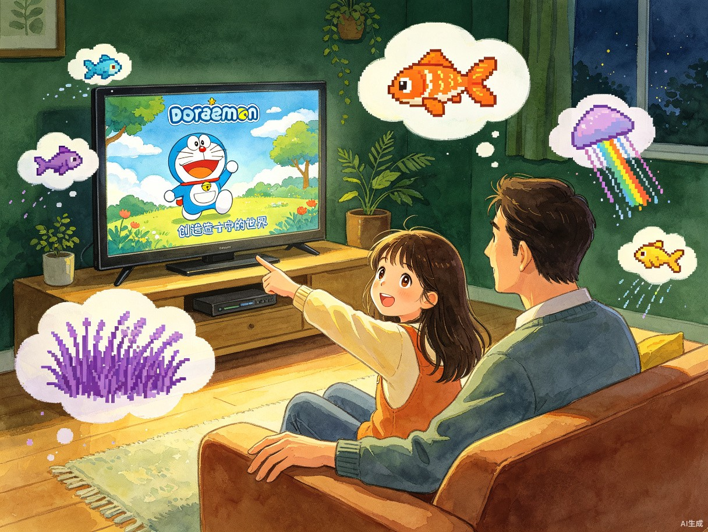

Creator Story
创作者故事
女儿不是测试用户，是共创者

The Spark
这句话就是产品的灵魂
前两天晚上，小羽毛（10岁）在看哆啦A梦的剧场版《大雄的创世日记》，看完说「我也想造一个世界」。我说「这不就是Minecraft吗」，她说「可是Minecraft里我不在的时候世界不会变啊」——这句话就是产品的灵魂。
然后我们聊出了紫色草地、会飞的鱼、彩虹雨、鱼吃草、草没了鱼会长出腿的世界设定，全都写进了产品里。女儿不是测试用户，是共创者。
「可是Minecraft里我不在的时候世界不会变啊」
— 小羽毛，10岁，共创者
— 小羽毛，10岁，共创者